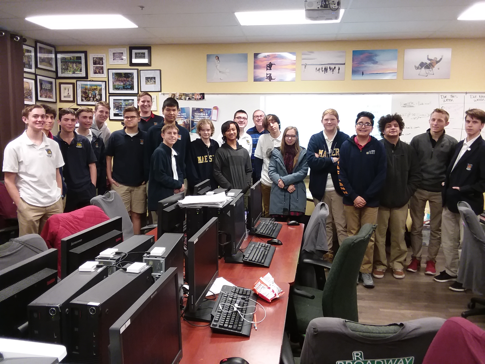

Our Winterim
“ComPro 2019 was AMAZING!! The students and I learned so much together. This course was
life-changing for many of us because we learned the skills to build websites, thus empowering us with
greater power to influence the world for good. Every single one of us learned - not because we were forced
to do so, not because we were bribed to do so, but because we wanted to do so. To me, this is one of the
magical ingredients of Winterim - individuals choosing to study something they are passionate about.”
-Mr.Gilbert

Class Graph
Before Christmas break, students were asked to personally rate their knowledge of
programming on a scale of 1-10. Approximately half the class reported a score of 2 or below. Students were
also told to give 20 hours of their winter break learning CSS, Javascript, and HTML using a free website
called “Codecademy.” (https://www.codecademy.com/)
Near the end of Winterim, students were again asked to rate their knowledge of programming. The chart on
the *left* shows how much their knowledge improved during Winterim.
(click on graph to enlarge)

Personal Websites
Using HTML, CSS, and Javascript, students spent hours coding from scratch to create
unique websites intended to better themselves and their community. On the very first day of Winterim each
student was assigned a partner to work with. If a problem were to occur, the students were instructed to
try their hardest with google before turning to their partner or asking others for help. Compro students
would agree that most of the time used for their website creation was spent fixing code and solving
problems. Throughout this process students have learned how to solve problems using the resources they
already have. They saw first hand that the internet has great value beyond just entertainment.

Downtime Activities
On an Adobe field trip, Compro received the message to “work hard. Play hard.” Despite
the endless capabilities of programming, big companies like Adobe know work can sometimes be tedious. They
seek to optimize their environment for employee satisfaction by including recreation, games, and food. We
especially enjoyed the spacious computer game room in the basement. Teenager heaven!
Lunch breaks are crucial in any work environment. The entire Compro class enjoyed multiple lunches and
snacks provided by Winterim fees. Papa John’s and Panda Express were the favorites! Compro watched many
episodes of “Splatalot” on BYU-TV and played multiple indoor frisbee games with Mr.Gilbert whose team often
lost.
“These activities were important to recharge batteries, and keep students motivated.”
-Ted Gilbert

Visitors
“We were fortunate to receive guidance, insight, and direction from many professionals
in the programming and web development world. These include Michael Olsen of XactWare, Nate Zobrist of
Finicity, Hector Pina of Acima Credit, Ryan Heaton of Family Search, Dustin Christensen of Western
Governors University, and Dirk Giles of MicroFocus. Additionally, the class had the opportunity to go to
the Adobe Campus in Lehi for a tour.”
-Mr.Gilbert
.jpg)